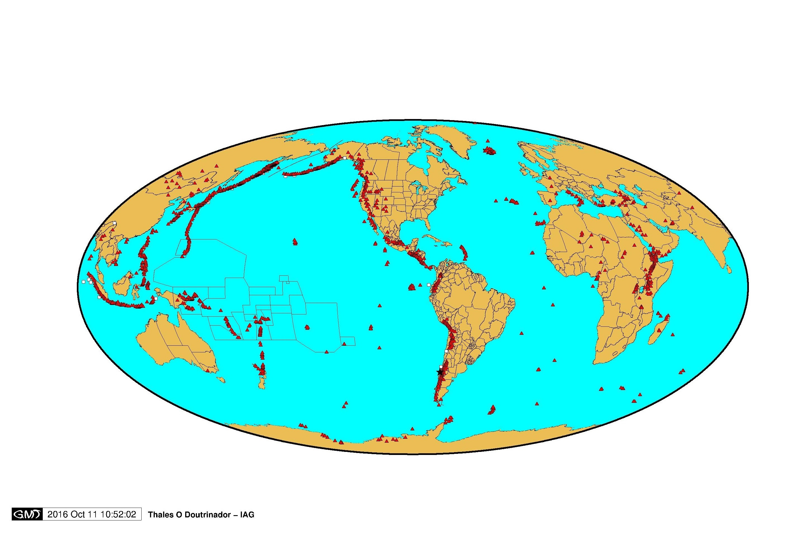
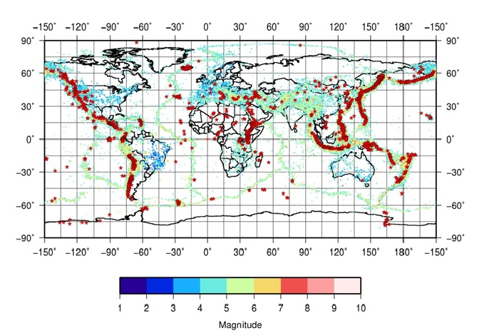
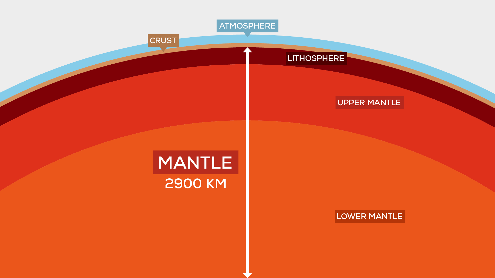
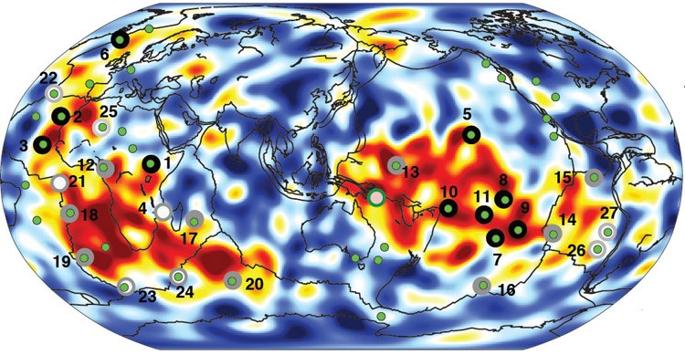

Vulcões
Vulcões são frestas na crosta terrestre, onde devido a pressão do centro da Terra o magma, ali presente, é expulso por essa determinada fresta. Sismos e vulcões são incidentes, geralmente, nas mesmas áreas , devido ao posicionamento destes em bordas de placas tectônicas, nas quais temos o encontro de placas continentais e oceânicas, sendo assim áreas de instabilidade notória.
O magma que sai dos vulcões durante as erupções é um material constituído de rochas em estado fundido e diversos gases, incluindo hidrogênio, monóxido e dióxido de carbono, SO2 e SO3, HCl e vapor d'água em diversas proporções. A temperatura típica do magma ao chegar á superfície durante uma erupção vulcânica é de 1000 °C, Ao perder os gases e vapor d'água durante a erupção, o magma fica reduzido a um material comumente chamado de lava.

Fonte: Elaborado pelo autor Thales Cunha da Paixão. O mapa exibe todos os vulcões presentes na terra, onde é possível observar o circulo de fogo do pacifico e as bordas das placas tectônicas.

Fonte: Elaborado por autor Thales Cunha da Paixão. O mapa exibe sismos e vulcões em escala mundial.

O mapa acima mostra as camadas da Terra de forma ampla e objetiva. A crosta continental conta com espessuras que variam entre 35 e 70 quilômetros. Depois da crosta, ha quase três mil quilômetros de manto até chegar à camada mais externa do núcleo da Terra. Essa camada mais externa, por sua vez, é enorme e tem o tamanho equivalente ao do planeta Marte, ela é — basicamente — formada por ferro fundido e conta com temperaturas de aproximadamente 5,5 mil graus Celsius.
Modelo de formação de vulcões
Trata-se de uma obra baseada no primeiro mapa 3D detalhado da parte interna do planeta Terra.

O modelo mostra as plumas mantélicas em funcionamento, desde o início da movimentação sísmica até a formação total — processo longo e demorado, mas necessário para que as "bocas" dos vulcões sejam conectadas ao magma da crosta terrestre. Ainda é possível observar que não existe uma subida reta, pois há vários desvios causados pelas diferenças de temperaturas no interior. Vale dizer ainda que a demonstração não é perfeita para todas as formações vulcânicas, mas funciona como um excelente modelo para a representação das primeiras evidências de que as plumas mantélicas são um fenômeno real — o que até hoje permanecem como um mistério para a ciência.